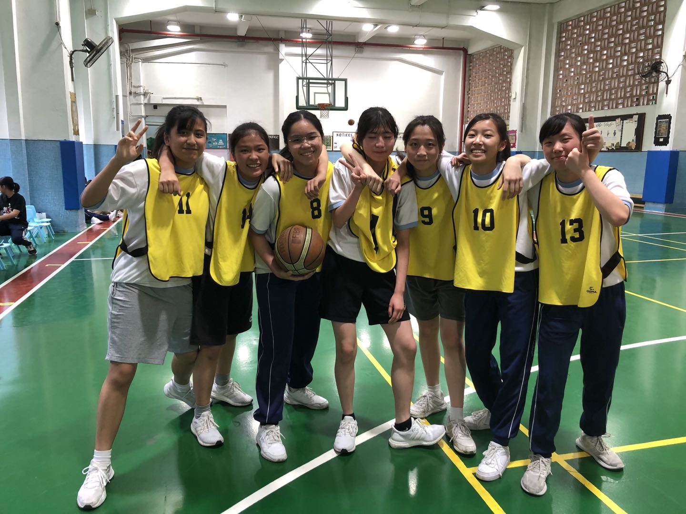

My name is Sabrina Hong. I was born in 2005 and I am 15 years old. I am a F4 student in Sacred
Heart
Canossian College (English Section).I am the discipline of the school and I'm from House of Hodgkin.
Biology is my favourite
subject. I love exploring new things and watching youtube videos in my spare time
like kpop or
dramas and I am also interested in playing table tennis and basketball. In my free time,
I like to listen to music.
- 